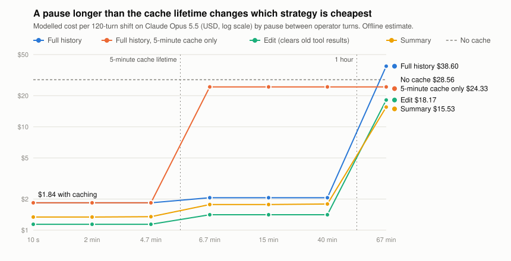

I build AI systems for real workflows, then measure whether they hold up.
AI engineer. Before a customer trusts an AI system they ask three things: can I check its work, what will it cost, and when does a person still have to look. Each project here answers one of them with a number, and says what that number does not show.
Document extraction tools report a confidence score. Few say what error rate you get if you trust it. fieldgate reads scanned receipts with docling OCR and a small language model on a CPU, scores every field from four independent kinds of evidence, and picks the approval threshold with a statistical guarantee. What falls below the threshold goes to a review queue with the supporting text outlined on the image.
docling
RapidOCR
Qwen3 1.7B, local
scikit-learn
SciPy
FastAPI
The cut is chosen on labelled receipts so that, with 95% confidence, the error rate among approved fields stays at or under the target. Audited approvals feed a monitor that raises an alarm when that stops being true.
43% → 1.6%simulation, 1,000 runs
How often the threshold misses its target. Picking the loosest cut that looked fine on a labelled sample broke a 2% error target in 43% of simulated deployments. The certified cut broke it in 1.6%, inside its 5% allowance.
usual waycertified
0.957 → 0.979pairwise F1, 200 receipts
Rebuilding printed rows from OCR boxes. Layout models read columns, which separates a label from its amount. Estimating the photo's tilt from the boxes and regrouping rows recovered most of the lost pairings, scored against the dataset's own row labels.
What this does not show
One dataset (CORD receipts) and one 1.7B model. The guarantee holds only while new documents resemble the labelled ones, which is why the audit monitor exists. A tilt that shifts a receipt by exactly one row cannot be detected from upright boxes, and the tests pin that case down.
Agents
What does a long-running agent cost, and what does it forget?
Long agent runs outgrow their context, so every team picks a strategy: send everything, trim, clear old tool results, or summarise. Most comparisons price every input token at full rate, which is not what a cached agent loop pays. longhaul is an eval on Inspect AI that replays a 120-turn support shift through Inspect's own compaction strategies and prices each call with cache reads and writes counted separately.
Inspect AI
Anthropic prompt caching
LongMemEval adapter
CI regression gate
$1.84 vs $28.56per shift, modelled
Caching outweighs the choice of strategy. Sending full history costs about 15 times more with caching off. The best strategy saves a further 38% on top of caching.
cacheduncached
94% vs 48%evidence kept, 320 probes
Clearing old tool results beat trimming on both axes. It kept more of the facts the agent needed later and cost less. Trimming also made the agent wrong, not just forgetful: on counting questions it gave a confident undercount 95% of the time.
clear tool resultstrim
13×cost jump at a 5-minute pause
Pauses between turns change the answer. A pause just over five minutes makes a plain five-minute cache rewrite the whole prompt every turn. Past an hour, caching full history costs more than not caching at all.

Modelled cost per shift as the operator's pause between turns grows, at published Opus 5.5 prices.
What this does not show
No live-model run yet. The memory numbers come from a mock model that reads perfectly, so they measure whether the evidence survived each strategy, which is an upper bound on what any model could score. Costs are modelled from published prices and estimated token counts.
Chat-with-your-documents tools answer fluently and invent citations. In this local app the AI only proposes. Every claim carries a verbatim quote that code re-checks against the source, and a person approves before anything becomes knowledge. On top of the approved notes sit hybrid search with cited answers, spaced repetition, a Socratic tutor, a browser clipper and a read-only MCP server.
FastAPI
Claude Code as the agent
SQLite FTS5 + embeddings
MCP
Chrome extension
18 of 18attacks blocked by code
A hostile document cannot make the agent approve its own work. Every prompt-injection attack that needed a forbidden action was stopped by the tool policy or the validation gate, whatever the model did. The red team also found a real hole in the quote check, which is now fixed.
160 of 160quotes found verbatim
The quotes are real. Every quote in the approved notes appears word for word in its source, and every citation carries a page, section or timestamp.
75% vs 50%right source ranked first
Hybrid search finds the right source more often. Fusing keyword and embedding rankings put the answering source first for 15 of 20 questions, against 10 for keyword search alone, over about 7,700 passages.
hybridkeyword
What this does not show
The live numbers are small samples from one model on one day. The 20 retrieval questions were written by me, and a difference of one question is five points. It is a single-user tool that runs on one machine.
How I work
The same four steps in every project
Agree the number before building
Each project starts from the question a buyer asks and the metric that would answer it: error rate among approved fields, cost per session, quotes that check out.
Build on what already exists
docling for parsing, Inspect AI for evals, Claude Code as the agent. The work goes into the part nobody has built yet, and the results describe tools people already run.
Test the test
A known-good and a known-bad case run through each pipeline in CI. A perfect reader must score 100%, a model that always abstains must fail, and the statistical guarantee is checked against a population whose true error rate is known.
Publish the limits with the result
Every number comes with its sample size and what it does not show. Offline results are labelled offline. A result that needs a live run says so.
Also
Looking Game, a co-op demo for two to four players in Godot 4. Looking at a teammate makes them grow and looking away lets them shrink, and the three puzzles depend on it.